Week Seven Power Rankings
Matchup of the Week: Kris vs. PJ
Let’s see it Kris! Let’s see it! But for real, these teams are headed in different directions and this game would be huge for Kris to get the W in. What to watch for: * Tannehill vs. the Chiefs for PJ, filling in for Dak * Josh Jacobs and James Conner on the other side - both have soft matchups they can expose.
Waiver Wire Wizard
BUSY ASS WEEK Y’ALL. Gonna go with JD McKissic at $6 for Neil, because I pick Neil every week. But for real, he could be nice depth if Gibson goes out, and is pretty decent with him in there already.
🤴🏻 - PJ (4-2) ↔️
Four straight wins, top in points, has 3 top five RBs, Hill, but a lil weak at TE!
#2 - Jake (4-2) ⬆️
Top scorer three weeks so far, just a half point off of PJ at the top and improved my team’s depth quite a bit this week - getting Jeudy back too!
#3 - Tony (4-2) ⬇️
Could easily be #1 or #2, not a lot to dislike on this team besides Ridley disappointing so far - hopefully it’s not an ongoing thing and we see him back at WR1 level this week.
#4 - Seif (3-3) ⬆️
Needs to get AJ Brown going, but Deebo and Chase have been sensational anyway. Henderson’s stock keeps rising, but Gibson’s drops. Not many holes on this team either, especially when Kittle gets back.
#5 - Neil (3-3) ⬇️
Neo drops to .500, but if he can get passed Andy this week, he’ll have survived Hell-Week (aka the Bills bye, since he has four Bills now). Nice move to pick up Pitts with Knox out, while getting Diggs for funsies.
#6 - Andy (2-4) ⬆️⬆️⬆️⬆️
Out of the cellar and into the middle! Andy’s biiiig week pushes him way up in the rankings. Can Mixon stay healthy and be the guy everyone has always thought he can be - carrying Andy to the promised land?
#7 - CJ (2-4) ⬇️
Fifth in PF despite only having two wins. Tough matchup this week with so many injuries and byes - but you gotta manage that shit, and CJ has been making moves. We’ll see if they pay off!
#8 - Joel (3-3) ↔️
Hanging on with Chuba until CMC returns - Joel’s missing the home run hitter right now, with some other whiffs, like Miles Sanders - probably the most frustrating player in all of fantasy this year.
#9 - Kris (3-3) ↔️
Sub-100 after I said he should be ranked higher likely, shame, shame. Only team under 700 points.
💩 - Ian (2-4) ⬇️⬇️⬇️
A true Dr. Jeckyl and Mr. Hyde team here - lots to like but it seems like a coin flip for so many of his guys. Scary Terry has had an insane target share, can he build some chemistry with Hiney and get back on track?
Week Six Power Rankings
Matchup of the Week: Andy and CJ
Both team’s desperately need this week’s W. Andy to get out of the basement and CJ to get through his nightmare of injuries.
Waiver Wire Wizard
The abovementioned fellas both land here too with a nice Landry pickup ($2, CJ) and Toney ($3, Andy). Both could be nice finds for the rest of the season.
🤴🏻 - PJ (3-2) ⬆️
Didn’t seem like it would take long for PJ’s squad to get out of the basement. Just a ton of talent on this team, especially with Najee’s emergence. Some inconsistency remains.
#2 - Tony (3-2) ⬆️⬆️⬆️
Huge win for the Ravens and Tony. PP must have been extra hard.
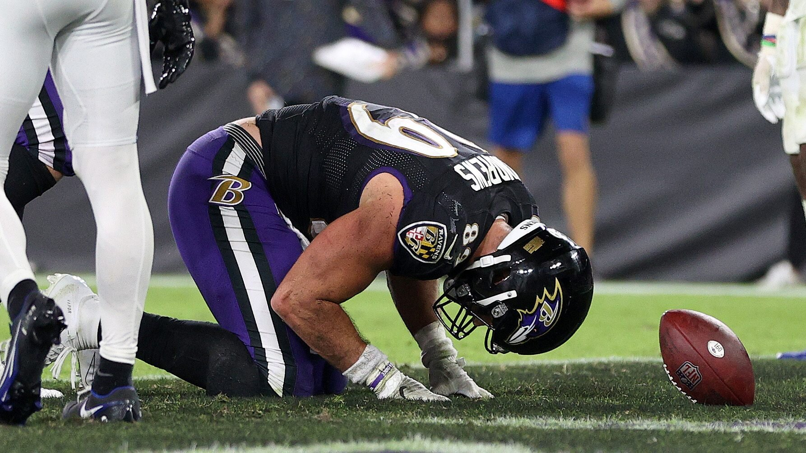
#3 - Jake (3-2) ⬆️⬆️⬆️⬆️
Back in the playoff mix, with the highest scoring week after a dud the week before. WR2/Flex can be a guessing game a bit, but Brown, Pittman, and Claypool all have been playing nice, awaiting Jeudy’s return.
#4 - Neil (3-2) ⬇️⬇️⬇️
Neil’s survived his RB woes, and Robinson looks like last year’s beast now, but Neil ran into a tough matchup last week. Now he’s got the TE guessing game too.
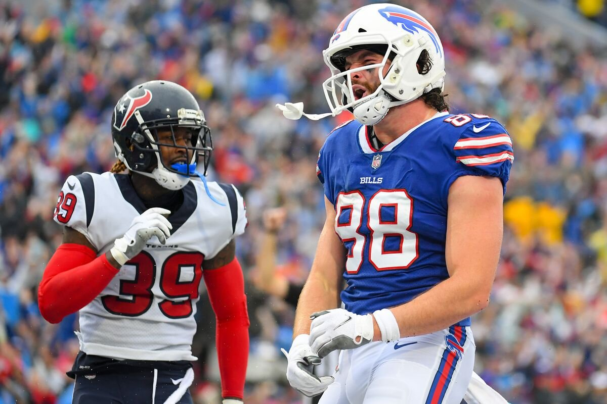
#5 - Seif (2-3) ⬆️
After #4, I have a tougher time separating teams and this team scares me the most out of the rest. I don’t want to line up against Cook, Cooper or Chase any week.
#6 - CJ (2-3) ⬆️⬆️⬆️
Big win last week keep CJ hanging on. I mean this roster has been annihilated. If he can get the W this week, it will be a small miracle. Excited to see MT13 back on the field ands screwing with this lineup.
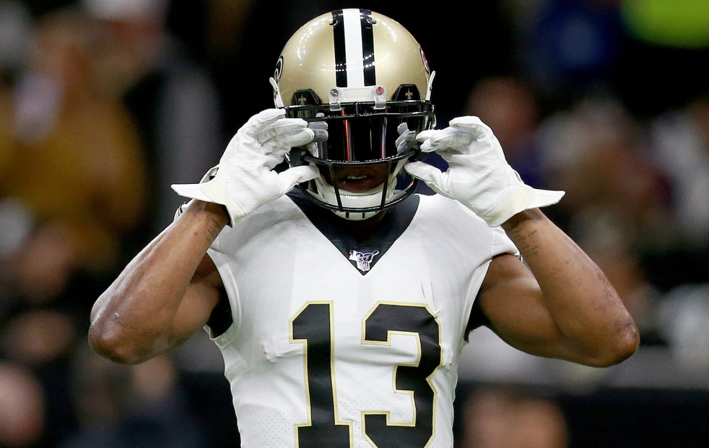
#7 - Ian (2-3) ⬆️
Ian’s been a magician on the waiver wire this year, with Patterson and Williams pacing their positions. Lackluster performances out of the rest of the big names though.
#8 - Joel (3-2) ⬇️⬇️⬇️
Spiral alert! This team is slipping quickly alongside CMC’s stock. At least Diontae’s is going up after Juju goes down.
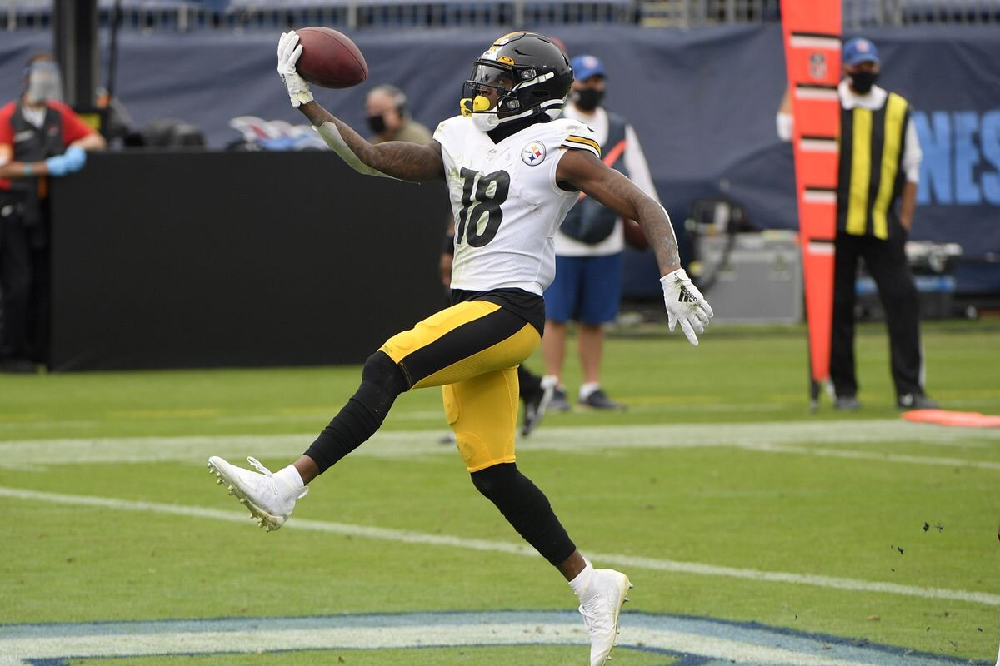
#9 - Kris (3-2) ⬇️⬇️⬇️⬇️⬇️⬇️
Probably deserves to be higher, but complained about Power Rankings lol. But inversely to Matt’s note above, this team does not scare me.
💩 - Andy (1-4) ↔️
Andy gets the matchup he needs this week, can he take advantage and get out of the the 10-spot?
Week Four Power Rankings
Matchup of the Week: CJ & PJ
Good banter, bad teams, what more could you want! Don’t want to drop to 1-3, better get it done tonight!
Waiver Wire Wizard
Neil again, with the Moss pickup and Saints D.
🤴🏻 - Joel (3-0) ↔️
Undefeated, pretty hard to argue with that. Gets Dionte back this week, and maybe CMC next. Big matchup with Kris this week!
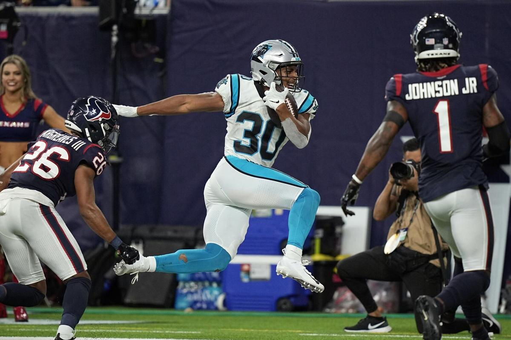
#2 - Neil (2-1) ⬆️⬆️
Highest in points against and still 2-1. Neil’s team has been consistently very good - and I mean, let’s not not talk about Jesus doing it again.
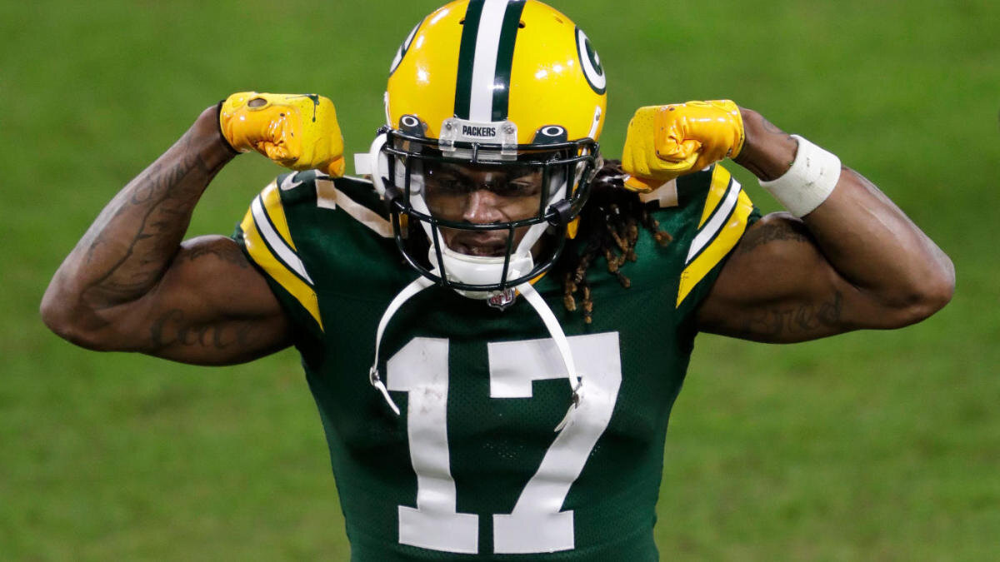
#3 - Jake (2-1) ↔️
Big week keeps me around here. I’m less than a point away from being undefeated and the same margin away from being top in points.
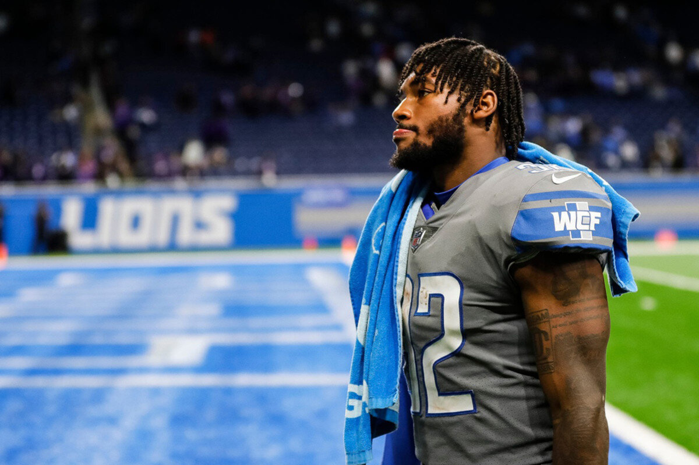
#4 - Chris (1-2) ⬆️⬆️⬆️⬆️⬆️
Cooks! Every week I’m obligated to mention him. Big week from Chris gets him his first W and in impressive fashion. Jefferson looks like he’s ready to go crazy again now after a semi-slow start.
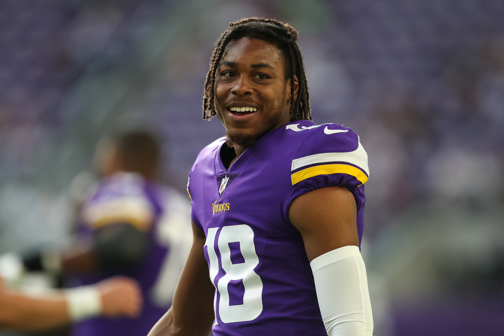
#5 - PJ (1-2) ⬆️⬆️⬆️⬆️
Where’s the beef!? On paper this team looks strong, but has been slow out the gate. A nice first win gets PJ a matchup with Chris, on the most similar trajectory.
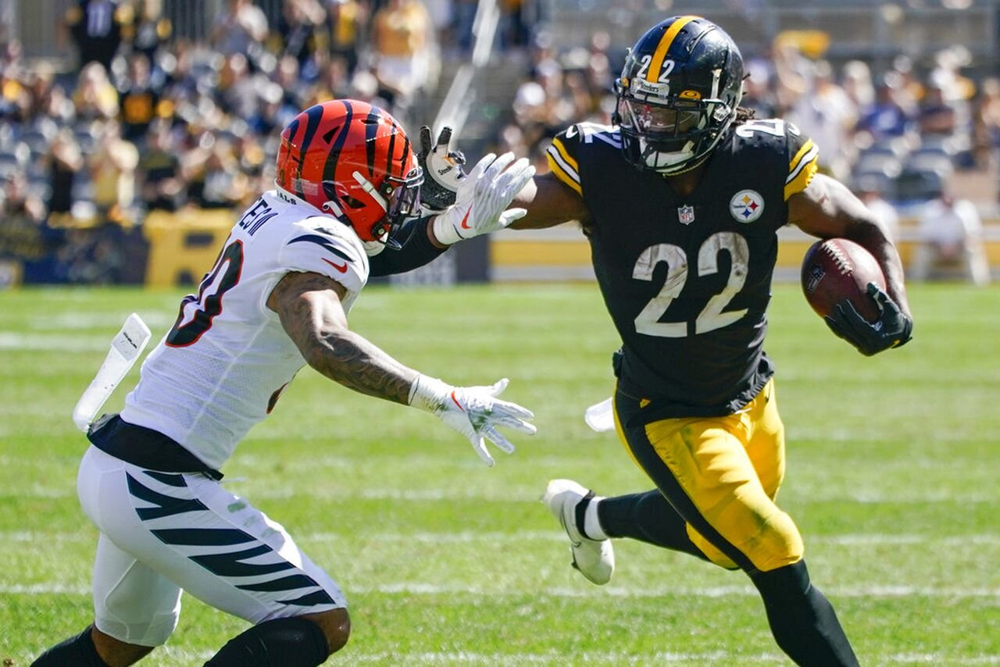
#6 - Tony (1-2) ⬇️⬇️⬇️
Tony’s a blink away from being around #2 or #3, but that’s fantasy right? Rough loss to PJ, he’ll look for revenge against a spiraling team at the bottom of the rankings.
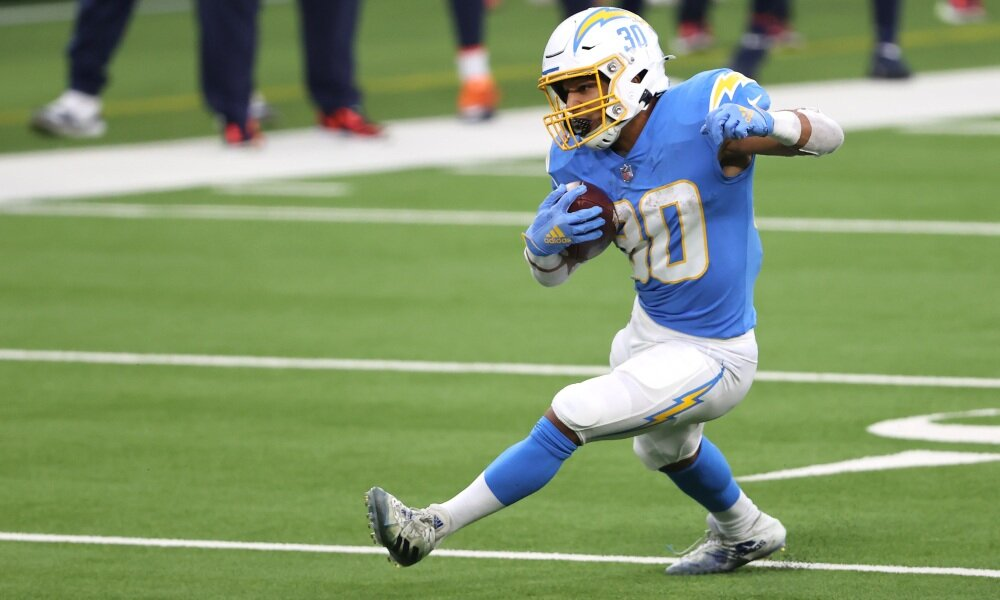
#7 - Ian (1-2) ⬇️
Diggs is killing this team. Ian had to reach for him and he’s just been so-so. Pitts has disappointed as well. But I think both start ramping up swiftly. Killer Mike has been a snag and a half.
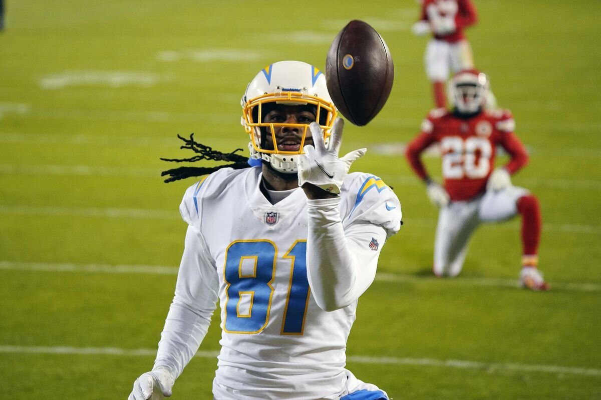
#8 - Kris (2-1) ⬇️⬇️⬇️⬇️⬇️
What do we make of this team? Has both our highest total in a week, and lowest. 81 is pathetic.
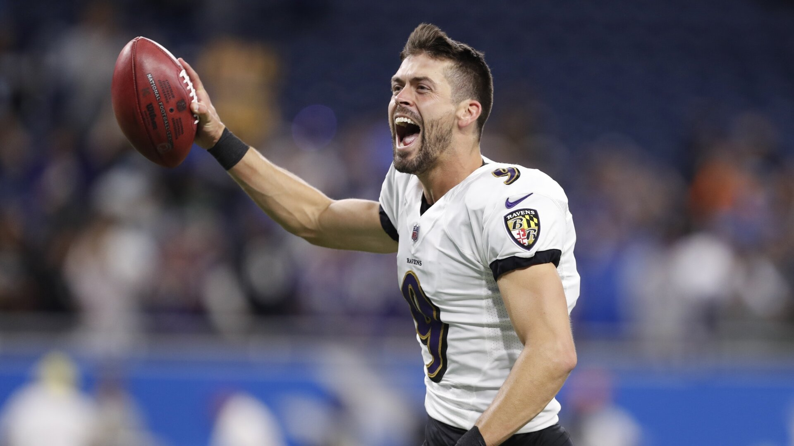
#9 - Matt (1-2) ⬇️⬇️⬇️⬇️
I think Matt forgot we have a league. He’s suffering without bringing his trash talk to the table.
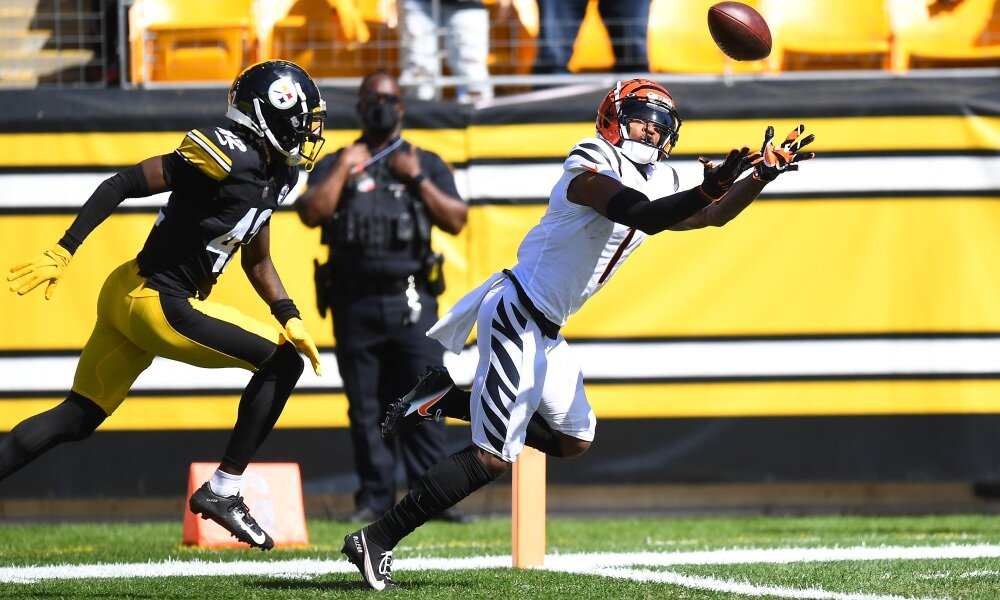
💩 - Andy (1-2) ⬇️⬇️
OOoooWwweeee he’s tryin’! Not from a lack of effort, but I got Andy here because he has no sure things on the squad. Could win any week, but consistency is so important.
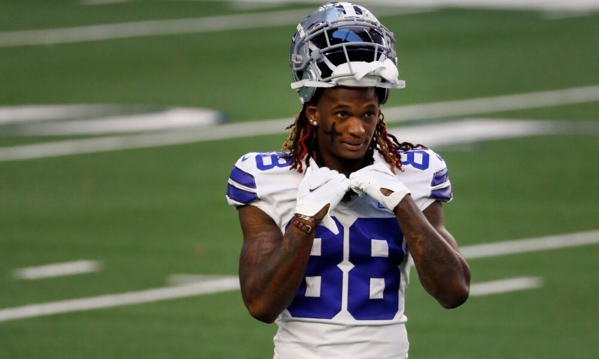
Week Three Power Rankings
Matchup of the Week: Tony (1-1) vs. Neil (1-1)
1-1 matchup here looks like it’s going to be close. DJ Moore got Neil started right. Fournette being elevated to the starting role is also interesting. Does Barkley get unleashed finally? Kupp vs. DeVante is spicy too.
Waiver Wire Wizard
How about not-Andy… he spent $35 on Pollard, only other bid was $2 lol. Going to go with Neil picking up Waddle after the Wednesday drop - think he stays flex worthy.
🤴🏻 - Joel (2-0) ⬆️
Was moving into this spot, but losing CMC is going to be the story of the week, right? Scary injury for Dionte, he could be missed.
#2 - Kris (2-0) ⬆️⬆️⬆️⬆️
Two strong weeks has the Ravens-only strategy looking pretty good. Question mark remains CEH.
#3 - Tony (1-1) ⬆️⬆️⬆️⬆️⬆️⬆️⬆️
What a bounce back from the #10 spot! I think this team’s just getting started.
#4 - Neil (1-1) ⬇️⬇️⬇️⬇️
Huge talent at QB and TE, but will need a little Moore (lol) from DeVante I think - but expect it too.
#5 - Matt (1-1) ⬇️⬇️⬇️⬇️
Zilla takes an L but keeps on chuggin. Not much to worry about here unless Cook or Henderson miss significant time.
#6 - Ian (1-1) ⬆️⬆️⬆️
This bastard has Aaron Jones on his team.
#7 - Jake (1-1) ⬇️⬇️⬇️⬇️
When you lose like that you gotta drop spots. Wasted a Henry bomb.
#8 - Andy (0-1) ⬇️
A non-impressive win gets Andy on the board. Needs more production from Mixon - shocker.
#9 - Chris (0-2) ⬆️
Cooks is killing it, but what’s up with Kamara? Can Gronk carry this team to its first win this week?
💩 - PJ (0-2) ⬇️⬇️⬇️⬇️⬇️⬇️
Roster looks rediculous on paper, but a sub-100 loss sends PJ to the toilet spot.
Week Two Power Rankings
Matchup of the Week: Joel v. Matt
1 and #2 in the standings meet up in the second week. They both had big booms from a couple of guys last week, let’s see who’s going to be more consistent than the other.
Waiver Wire Wizard
$40 bomb - Ian definitely saw me on the schedule, starting shaking in his boots and pulled his wallet out! I do like spend though - someone’s gotta go big on a guy like what’s his name? Elijah something?
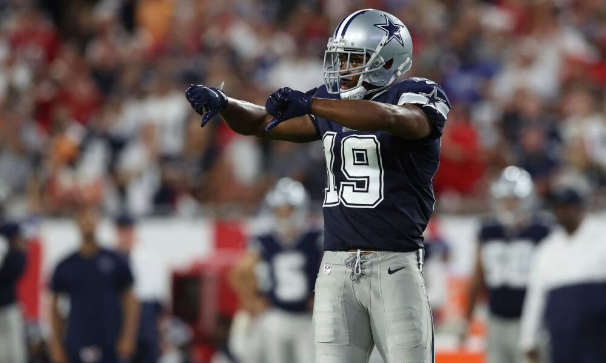
“Boo other quarterbacks” “Yay Dak!”🤴🏻 - Matt (1-0) ⬆️⬆️⬆️
Outscored but I like the output of this team and its depth - plus he didn’t play a kicker. Next year I’m drafting from my phone, fuck you guys.
#2 - Joel (1-0) ⬇️
Big week and the number one ranking, but falls to number two! I got scared when Dionte went down, and I’m not sold on a few guys on the bench - even Shenault faded late after starting hot.
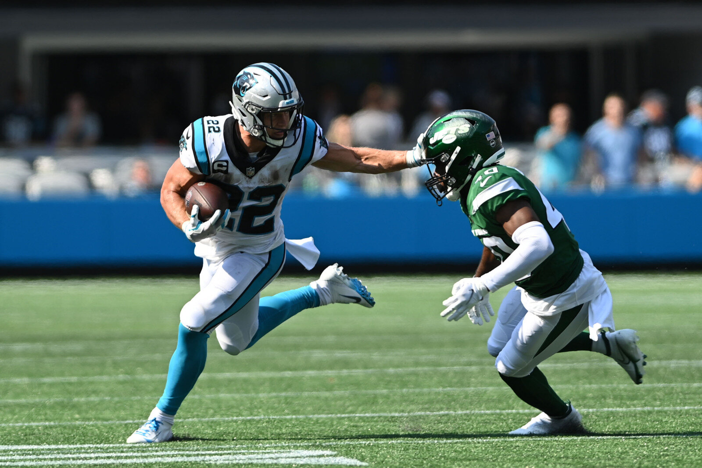
Welcome back Mac#3 - Jake (1-0) ↔️
Not my best week but glad to get out with a W and stay in the mix after losing Mostert immediately, and Jeudy, thankfully not to a broken ankle (oh man I freaked the fuck out when this happened). Hoping Swift and AB are consistent or I could be in trouble.
#4 - PJ (0-1) ⬇️
A tough week one loss doesn’t move PJ far after acquiring two first-rounders thusfar. Stick around I’m sure that’ll pay off.
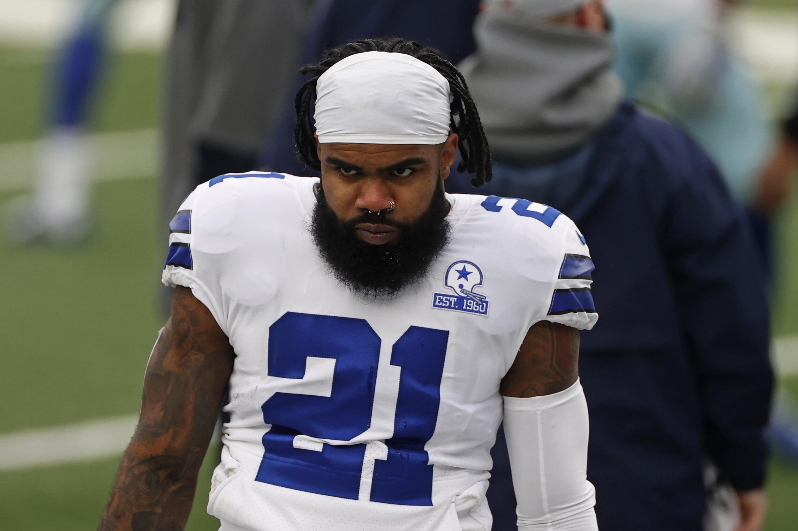
Zeke looking for revenge against Andy this week#5 - Neil (1-0) ↔️
Neil squeaks it out with a big night from Waller on Monday night! Shades of last year for Chris with the close loss. One loss could send this team spiraling to the bottom though.
#6 - Kris (1-0) ⬆️⬆️
Kris’ subscription to ravensonly has successfully renewed, and they all produced. I’d be rocking “laugh now cry later“ if I were him (because we are still laughing I think).
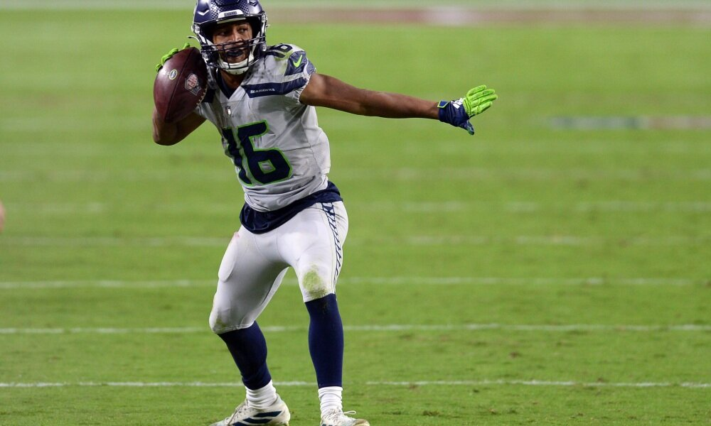
Lockett was extra smooth this week#7 - Andy (0-1) ⬇️
Andy “Sell the Dip“ Turner bails on his top two RBs but somehow stays relevant. I like this team still from a high-floor point of view, but maybe not as big boomers.
#8 - Chris (0-1) ⬆️⬆️
Ouchie for the Slutler on a last-minute loss, but CJ gets a chance against the lowest scorer so far this week AND moves up two spots! Cooks also making us all look dumb but can’t play JAX every week.
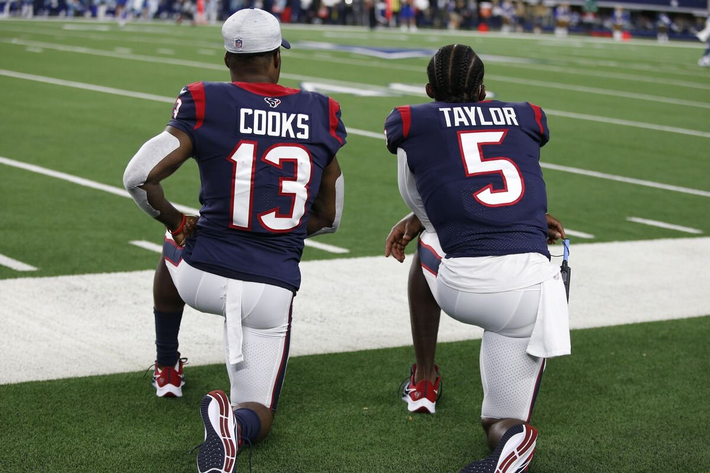
Could it be love?#9 - Ian (0-1) ⬇️⬇️
We know he’s got the money, but were they the right moves to get Ian’s team headed in the right direction? I hope if so, that he waits until at least after we’re done playing to do so. Happy Birthday too big dog!
💩 - Tony (0-1) ⬇️
Lowest score by a decent margin and no activity on the waiver wire. But the man pays his bets timely and I appreciate that!
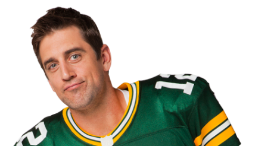
Week One Power Rankings
Matchup of the Week: PJ vs. Joel These guys hate each other and it really shows when they meet on the field. What a better way to open the season with this rivalry, with both sitting atop of the power rankings (spoiler!!)
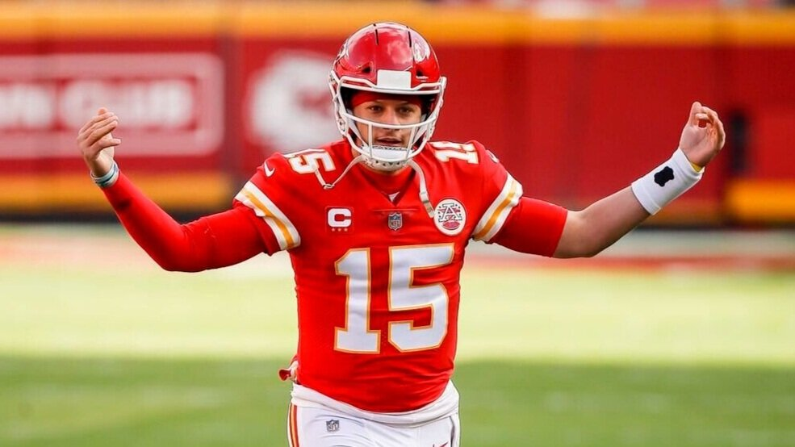
#1 - JOEL
I rank Joel’s squad in the top 4 for QB, RB and WR. I’m high on Sanders and think he could be a steal. Favorite Pick: Mahomes The perfect spot in the draft for a Chiefs fan to overspend just a tad! Worst Pick: Tight End Joel’s team is pretty solid all around, but I’m not sold on TE.
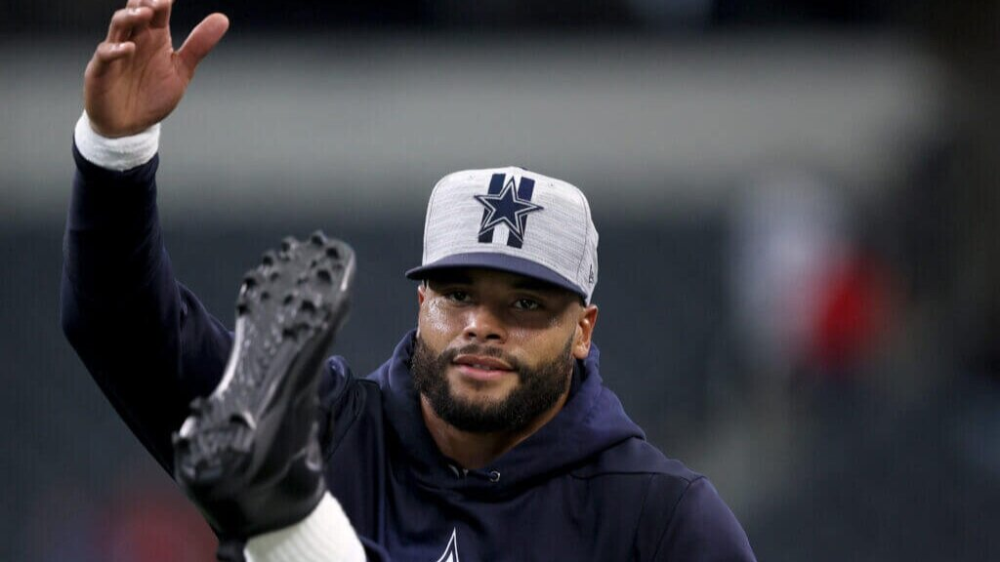
#2 - PJ
Metcalf is such a strong keeper, and paired with Hill and Evans, it’s hard to rank anyone else’s WR core higher. Favorite Pick: Kyler + Dak If the strategy was to trade one, it worked. Landing Hill is huge without sacrificing much at QB and a RB that wasn’t drafted to play a lot on this team. Worst Pick: OBJ I don’t hate a lot, I dislike it a bit, but don’t hate it.
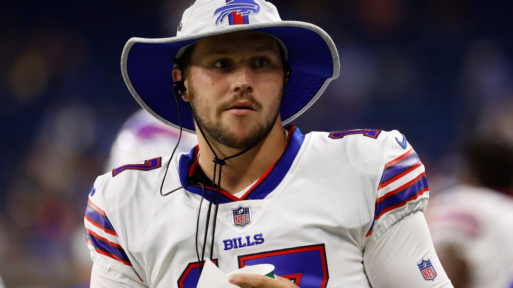
#3 - JAKE
I think I have the deepest RB group in depth but not top-flight, which is valuable obviously, but with the caveat that many of them may get hurt lol. Favorite Pick: Josh Allen! I’m just stoked to root for this guy, he’s so fun. Worst Pick: Zach Moss He’s already gone… I think I just fell in love with the Bills a bit.
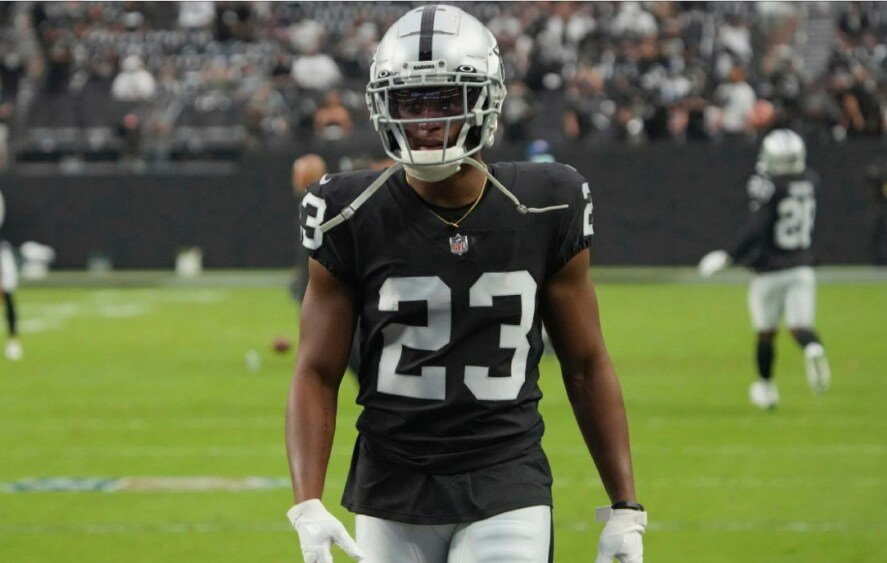
#4 - MATT
Deepest at RB all together, some question marks still even with that depth. Gibson is a bit of an unknown even with what he did last year - we’ll see! Henderson, Davis, Chase, Golladay? Lot’s of ?? but I don’t hate em! Favorite Pick: Kenyan Drake Josh Jacobs is Mr. Glass, and Drake is already set to take a big load with Jacobs in the lineup. Definitely a target of mine if I didn’t have a No-Raiders policy. Worst Pick: Deebo Samuel I like your squad Matt! Hard to pick one, but I think it’s Cooper or Samuel, whoever gets hurt first or more seriously. (but after I wrote this I wanted to change it to Golladay)
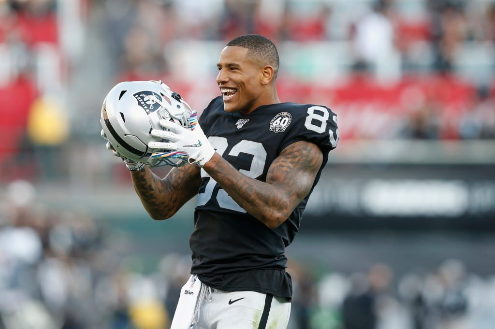
#5 - NEIL
I think Neil has a good shot if he plays his cards right. RB depth is last on my rankings but he has some guys that could still make it happen. Favorite Pick: Darren Waller I just can’t hate on the TE reach, and Waller is a Hall-of-Famer in the making. Worst Pick: Keeping JK Dobbins - Too soon?
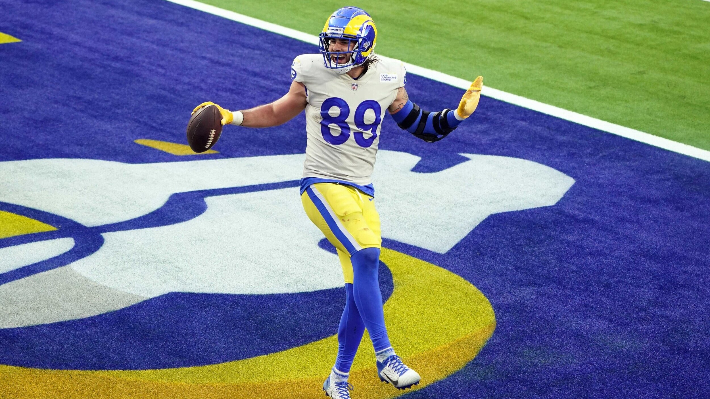
#6 - ANDY
Bold strategy Cotton - Keeping Swift as a 5th rounder, instead of Lamb as a 9th, then trading Swift and drafting Lamb in the 3rd. Favorite Pick: Tyler Higbee We listened to the same podcasts for sure… Higbee is gonna beast as the TE1 for the Rams, especially with a competent QB. Worst Pick: Joe Mixon I mean it’s probably Lamb in the third considering your options to keep. But, drafting Mixon in the second is just as dangerous as is it always is.
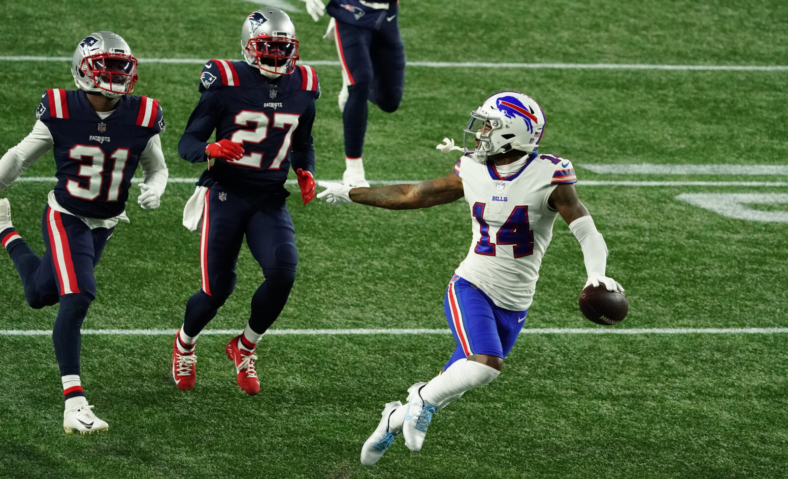
#7 - IAN
A lot riding on QB in Stafford, but I like the gamble. This team’s strength is a stong dong WR crew. Favorite Pick: Stefon Diggs I’m obsessed with this WR crew, and it starts at the top, with the balls to take Diggs ahead of Hill. I love this pick in combination with Aaron Jones who’s proved to be very stable. Worst Pick: David Montgomery I can easily be wrong about this, but I think I still need to see more tape to believe this guy is the real deal. Granted - I don’t watch a lot of the Bears.
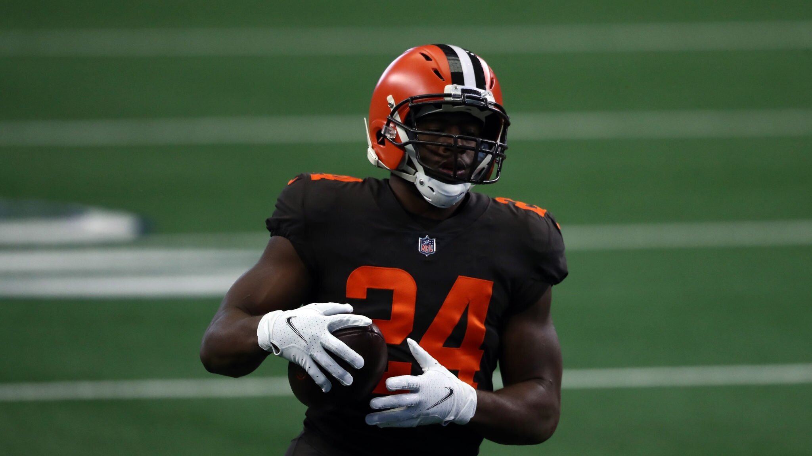
#8 - KRIS
What more can we say except this guy went all in on the Ravens? Actually… somehow Kris slides out of the 10-spot with solid picks in Chubb, CEH, Fant and Lamar - not the worst core ever but risky. Favorite Pick: Nick Chubb I think some boards have him lower than where Kris took him, but he just shows up. Worst Pick: So many Ravens Why?
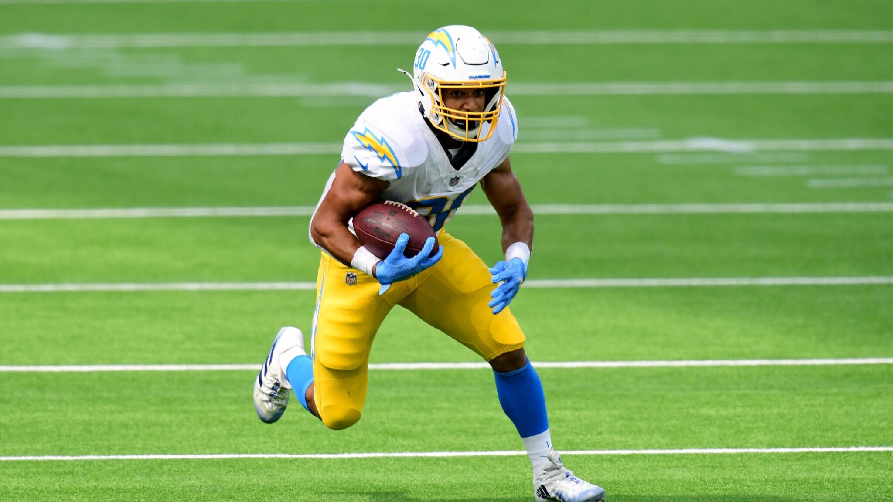
#9 - TONY
I loved Tony’s first two picks when we were at the draft, even knowing Barkley is a bit of a gamble - at pick ten, that’s a steal. But now that Ekeler is pulling up before the season begins, I feel like Saquon could be next. (sorry for this bad juju) Favorite Pick: Austin Ekeler I think he could be huge even with an injury out of the gate (and some past injury concern!) Worst Pick: Chuba Hubbard Handcuffing players that aren’t on your team is not a good look. You need CMC for this to make sense, especially in our league which has only five bench spots. He’ll be dropped before CMC is hurt. (If he is… I think last year ends up being his outlier honestly.)
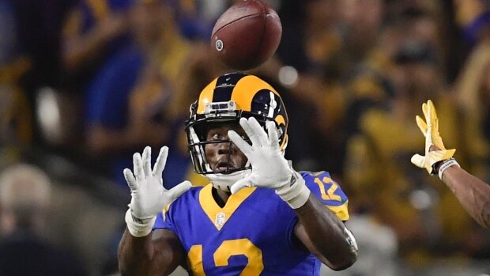
#10 - CHRIS
Good to see you here old friend!
Okay, let’s start by talking about Brandin Cooks…
Really? That’s the keeper you want? His ADP puts him around the pick you get him at and it gives you no flexibility? OH… and the Texans are gonna be BAD. There’s no other Texan on a roster in our league, lol.
Where should we end? How about - hmmm, gotta try to be brief… Carson is hurt a lot, Michael Thomas is on the PUP as your 7th rounder, Cooks…, Melvin has already lost his job, Tonyan is Mr Bang or Bust, which would be a cool porn name if it was Mr Bang and Bust, Gronk is another gamble, then Latvius isn’t even on a team. Sorry man, but get on the trade market and free agency!
Favorite Pick: Alan Robinson Soooo consistent, definitely a target for me always. Might benefit from new QBs on Chi-town. Worst Pick: Michael Thomas He could be a WR1 when he’s back, but developing chemistry with Winston could take time so it might not be immediate. I don’t see the depth to withstand losses waiting around for him.
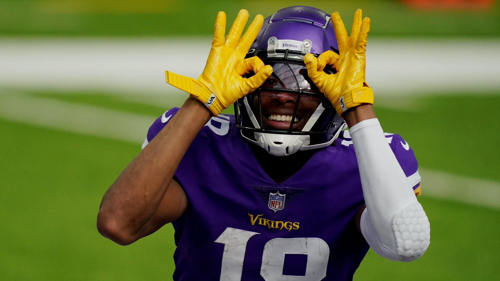
2021 - 2022 - Preseason
Draft Date and Details
August 28, 2021 - O’Barley’s - Centralia, WA Draft is at 3p, but the room is ours at 2:30p. We’ll be filling the picks in on ESPN (or maybe Sleeper) as we go, but for the folks in-person it’s a physical draft board - this will let remote folks draft alongside us. We won’t have time limits but will give each other shit if they’re taking too long.
Draft Order
On Saturday, August 14th, we’ll live stream picking the draft order. This will give you plenty of time to make the wrong decision on who to keep, and if anyone’s ballsy enough, trade some picks!
Keeper Due Date
Saturday, August 21st, is the date you must submit your keepers to me by. I will update the league when I have them all (but this should help with draft strategy too, one week ahead of draft)!
Keeper Rules
Any player drafted in the 3rd round or later can be kept. The cost for the keeper is based on their round drafted, minus one. If you choose to repeat keep, you’ll pay in triplicate for your picks (not $ buy-in). If you want to keep a player that was undrafted, you can keep them at the cost of their projected round plus one round in the first ESPN Fantasy Mock Draft of the year (see below). Keeper Example: * First year: Keeper’s round-drafted, minus 1 * 1 round penalty * Second year: 1 x 3 = 3 round penalty * Third year: 3 x 3 = 9 round penalty * Fourth year: Cannot be re-kept as penalty would be -27 rounds Undrafted Example: * Chase Claypool is projected in the 8th round in the Mock Draft. * He can be kept as a 9th rounder, as if you drafted him in the 10th the previous year. * Next year, he would be a 7th rounder.
Helpful Stuff
Saved these as PDFs in case ESPN loses another one of our seasons… * 2019 Draft * 2019 End of Season Rosters * 2020 Draft * 2020 End of Season Rosters * 2020 Keepers and original draft position (not a link): * Andy - Allen Robinson (8th, 2019) * Chris - Landry (9th, 2019) * Ian - DJ Chark (8th, 2019) * Jake - Derrick Henry (6th, 2019) * Joel - No One? * Kris - Lamar Jackson (12th, 2019) * Neil - Aaron Jones (4th, 2019) * Kris - Lamar Jackson (12th, 2019) * PJ - DK Metcalf (12th, 2019) * Matt - David Montgomery (9th, 2019) * Tony - Miles Sander (9th, 2019)
ESPN Mock Draft (May 18)
Round 1
1. Christian McCaffrey Car (RB1) – Cockcroft 2. Dalvin Cook Min (RB2) – Clay 3. Saquon Barkley NYG (RB3) – Karabell 4. Alvin Kamara NO (RB4) – Yates 5. Derrick Henry Ten (RB5) – Berry 6. Ezekiel Elliott Dal (RB6) – Bell 7. Travis Kelce KC (TE1) – Soppe 8. Aaron Jones GB (RB7) – Dopp 9. Tyreek Hill KC (WR1) – Walder 10. Davante Adams GB (WR2) – Bowen
Round 2
11. Jonathan Taylor Ind (RB8) – Bowen 12. Austin Ekeler LAC (RB9) – Walder 13. Nick Chubb Cle (RB10) – Dopp 14. Cam Akers LAR (RB11) – Soppe 15. Najee Harris Pit (RB12) – Bell 16. Joe Mixon Cin (RB13) – Berry 17. Stefon Diggs Buf (WR3) – Yates 18. D’Andre Swift Det (RB14) – Karabell 19. Antonio Gibson Wsh (RB15) – Clay 20. DeAndre Hopkins Ari (WR4) – Cockcroft
Round 3
21. Miles Sanders Phi (RB16) – Cockcroft 22. J.K. Dobbins Bal (RB17) – Clay 23. A.J. Brown Ten (WR5) – Karabell 24. Justin Jefferson Min (WR6) – Yates 25. DK Metcalf Sea (WR7) – Berry 26. Michael Thomas NO (WR8) – Bell 27. Keenan Allen LAC (WR9) – Soppe 28. George Kittle SF (TE2) – Dopp 29. Calvin Ridley Atl (WR10) – Walder 30. Clyde Edwards-Helaire KC (RB18) – Bowen
Round 4
31. Allen Robinson II Chi (WR11) – Bowen 32. Darren Waller LV (TE3) – Walder 33. Terry McLaurin Wsh (WR12) – Dopp 34. Chris Carson Sea (RB19) – Soppe 35. Kyle Pitts Atl (TE4) – Bell 36. Amari Cooper Dal (WR13) – Berry 37. David Montgomery Chi (RB20) – Yates 38. Adam Thielen Min (WR14) – Karabell 39. Josh Jacobs LV (RB21) – Clay 40. Robert Woods LAR (WR15) – Cockcroft
Round 5
41. Diontae Johnson Pit (WR16) – Cockcroft 42. Julio Jones Atl (WR17) – Clay 43. Mike Evans TB (WR18) – Karabell 44. Chris Godwin TB (WR19) – Yates 45. Cooper Kupp LAR (WR20) – Berry 46. CeeDee Lamb Dal (WR21) – Bell 47. Myles Gaskin Mia (RB22) – Soppe 48. Patrick Mahomes KC (QB1) – Dopp 49. Tyler Lockett Sea (WR22) – Walder 50. Ja’Marr Chase Cin (WR23) – Bowen
Round 6
51. Travis Etienne Jax (RB23) – Bowen 52. DJ Moore Car (WR24) – Walder 53. Kenny Golladay NYG (WR25) – Dopp 54. Courtland Sutton Den (WR26) – Soppe 55. Mike Davis Atl (RB24) – Bell 56. Mark Andrews Bal (TE5) – Berry 57. Brandin Cooks Hou (WR27) – Yates 58. Chase Edmonds Ari (RB25) – Karabell 59. Odell Beckham Jr. Cle (WR28) – Clay 60. T.J. Hockenson Det (TE6) – Cockcroft
Round 7
61. Kareem Hunt Cle (RB26) – Cockcroft 62. JuJu Smith-Schuster Pit (WR29) – Clay 63. James Conner Ari (RB27) – Karabell 64. Javonte Williams Den (RB28) – Yates 65. Josh Allen Buf (QB2) – Berry 66. Lamar Jackson Bal (QB3) – Bell 67. DJ Chark Jr. Jax (WR30) – Soppe 68. Brandon Aiyuk SF (WR31) – Dopp 69. Leonard Fournette TB (RB29) – Walder 70. Deebo Samuel SF (WR32) – Bowen
Round 8
71. Chase Claypool Pit (WR33) – Bowen 72. Trey Sermon SF (RB30) – Walder 73. James Robinson Jax (RB31) – Dopp 74. Tyler Boyd Cin (WR34) – Soppe 75. Laviska Shenault Jr. Jax (WR35) – Bell 76. Michael Carter NYJ (RB32) – Berry 77. David Johnson Hou (RB33) – Yates 78. Tee Higgins Cin (WR36) – Karabell 79. Kyler Murray Ari (QB4) – Clay 80. Dak Prescott Dal (QB5) – Cockcroft
Round 9
81. Curtis Samuel Wsh (WR37) – Cockcroft 82. Logan Thomas Wsh (TE7) – Clay 83. Robby Anderson Car (WR38) – Karabell 84. Justin Herbert LAC (QB6) – Yates 85. Raheem Mostert SF (RB34) – Berry 86. DeVonta Smith Phi (WR39) – Bell 87. Jarvis Landry Cle (WR40) – Soppe 88. Melvin Gordon III Den (RB35) – Dopp 89. Zack Moss Buf (RB36) – Walder 90. Russell Wilson Sea (QB7) – Bowen
Round 10
91. Jerry Jeudy Den (WR41) – Bowen 92. Aaron Rodgers GB (QB8) – Walder 93. William Fuller V Mia (WR42) – Dopp 94. Damien Harris NE (RB37) – Soppe 95. Corey Davis NYJ (WR43) – Bell 96. Marquise Brown Bal (WR44) – Berry 97. Noah Fant Den (TE8) – Yates 98. Jaylen Waddle Mia (WR45) – Karabell 99. Michael Gallup Dal (WR46) – Clay 100. Dallas Goedert Phi (TE9) – Cockcroft
Round 11
101. Kenyan Drake LV (RB38) – Cockcroft 102. Ronald Jones II TB (RB39) – Clay 103. Nyheim Hines Ind (RB40) – Karabell 104. Cole Beasley Buf (WR47) – Yates 105. Antonio Brown TB (WR48) – Berry 106. J.D. McKissic Wsh (RB41) – Bell 107. Marvin Jones Jr. Jax (WR49) – Soppe 108. AJ Dillon GB (RB42) – Dopp 109. DeVante Parker Mia (WR50) – Walder 110. Tarik Cohen Chi (RB43) – Bowen
Round 12
111. Michael Pittman Jr. Ind (WR51) – Bowen 112. Gus Edwards Bal (RB44) – Walder 113. Kadarius Toney NYG (WR52) – Dopp 114. Jalen Hurts Phi (QB9) – Soppe 115. Henry Ruggs III LV (WR53) – Bell 116. Jamaal Williams Det (RB45) – Berry 117. Jonnu Smith NE (TE10) – Yates 118. Buccaneers DST TB (DST1) – Karabell 119. Jalen Reagor Phi (WR54) – Clay 120. Tony Pollard Dal (RB46) – Cockcroft
Round 13
121. Mike Williams LAC (WR55) – Cockcroft 122. Mecole Hardman KC (WR56) – Clay 123. Devin Singletary Buf (RB47) – Karabell 124. Jeff Wilson Jr. SF (RB48) – Yates 125. Irv Smith Jr. Min (TE11) – Berry 126. James White NE (RB49) – Bell 127. Darrell Henderson Jr. LAR (RB50) – Soppe 128. Robert Tonyan GB (TE12) – Dopp 129. Trey Lance SF (QB10) – Walder 130. Mike Gesicki Mia (TE13) – Bowen
Round 14
131. Kenneth Gainwell Phi (RB51) – Bowen 132. Browns DST Cle (DST2) – Walder 133. Amon-Ra St. Brown Det (WR57) – Dopp 134. Matt Ryan Atl (QB11) – Soppe 135. T.Y. Hilton Ind (WR58) – Bell 136. Samaje Perine Cin (RB52) – Berry 137. Nelson Agholor NE (WR59) – Yates 138. Tom Brady TB (QB12) – Karabell 139. Deshaun Watson Hou (QB13) – Clay 140. Joe Burrow Cin (QB14) – Cockcroft
Round 15
141. Justin Tucker Bal (K1) – Cockcroft 142. Washington DST Wsh (DST3) – Clay 143. Hunter Henry NE (TE14) – Karabell 144. Ravens DST Bal (DST4) – Yates 145. Steelers DST Pit (DST5) – Berry 146. 49ers DST SF (DST6) – Bell 147. Brandon McManus Den (K2) – Soppe 148. Younghoe Koo Atl (K3) – Dopp 149. Tyler Higbee LAR (TE15) – Walder 150. Rams DST LAR (DST7) – Bowen
Round 16
151. Harrison Butker KC (K4) – Bowen 152. Matt Gay LAR (K5) – Walder 153. Bills DST Buf (DST8) – Dopp 154. Broncos DST Den (DST9) – Soppe 155. Greg Zuerlein Dal (K6) – Bell 156. Tyler Bass Buf (K7) – Berry 157. Jason Sanders Mia (K8) – Yates 158. Jason Myers Sea (K9) – Karabell 159. Graham Gano NYG (K10) – Clay 160. Colts DST Ind (DST10) – Cockcroft
Week One Power Rankings
#1 - JOEL
I rank Joel’s squad in the top 4 for QB, RB and WR. I’m high on Sanders and think he could be a steal. Favorite Pick: Mahomes The perfect spot in the draft for a Chiefs fan to overspend just a tad! Worst Pick: Tight End Joel’s team is pretty solid all around, but I’m not sold on TE.
#2 - PJ
Metcalf is such a strong keeper, and paired with Hill and Evans, it’s hard to rank anyone else’s WR core higher. Favorite Pick: Kyler + Dak If the strategy was to trade one, it worked. Landing Hill is huge without sacrificing much at QB and a RB that wasn’t drafted to play a lot on this team. Worst Pick: OBJ I don’t hate a lot, I dislike it a bit, but don’t hate it.
#3 - JAKE
I think I have the deepest RB group in depth but not top-flight, which is valuable obviously, but with the caveat that many of them may get hurt lol. Favorite Pick: Josh Allen! I’m just stoked to root for this guy, he’s so fun. Worst Pick: Zach Moss He’s already gone… I think I just fell in love with the Bills a bit.
#4 - MATT
Deepest at RB all together , some question marks still even with that depth. Gibson is a bit of an unknown even with what he did last year - we’ll see! Henderson, Davis, Chase, Golladay? Lot’s of ?? but I don’t hate em! Favorite Pick: Kenyan Drake Josh Jacobs is Mr. Glass, and Drake is already set to take a big load with Jacobs in the lineup. Definitely a target of mine if I didn’t have a No-Raiders policy. Worst Pick: Deebo Samuel I like your squad Matt! Hard to pick one, but I think it’s Cooper or Samuel, whoever gets hurt first or more seriously. (but after I wrote this I wanted to change it to Golladay)
#5 - NEIL
I think Neil has a good shot if he plays his cards right. RB depth is last on my rankings but he has some guys that could still make it happen. Favorite Pick: Darren Waller I just can’t hate on the TE reach, and Waller is a Hall-of-Famer in the making. Worst Pick: Keeping JK Dobbins - Too soon?
#6 - ANDY
Bold strategy Cotton - Keeping Swift as a 5th rounder, instead of Lamb as a 9th, then trading Swift and drafting Lamb in the 3rd. Favorite Pick: Tyler Higbee We listened to the same podcasts for sure… Higbee is gonna beast as the TE1 for the Rams, especially with a competent QB. Worst Pick: Joe Mixon I mean it’s probably Lamb in the third considering your options to keep. But, Mixon in the second is just as dangerous as is it always is.
#7 - IAN
A lot riding on QB in Stafford, but I like the gamble. This team’s strength is a stong dong WR crew. Favorite Pick: Stefon Diggs I’m obsessed with this WR crew, and it starts at the top, with the balls to take Diggs ahead of Hill. I love this pick in combination with Aaron Jones who’s proved to be very stable. Worst Pick: David Montgomery I can easily be wrong about this, but I think I still need to see more tape to believe this guy is the real deal. Granted - I don’t watch a lot of the Bears.
#8 - KRIS
What more can we say except this guy went all in on the Ravens? Actually… somehow Kris slides out of the 10-spot with solid picks in Chubb, CEH, Fant and Lamar - not the worst core ever but risky. Favorite Pick: Nick Chubb I think some boards have him lower than where Kris took him, but he just shows up man. Worst Pick: So many Ravens Why?
#9 - TONY
I loved Tony’s first two picks when we were at the draft, even knowing Barkley is a bit of a gamble - at 10, that’s a steal. But now that Ekeler is pulling up before the season begins, I feel like Saquon could be next. (sorry for this bad juju) Favorite Pick: Austin Ekeler I think he could be huge even with an injury out of the gate (and some past injury concern!) Worst Pick: Chuba Hubbard Handcuffing players not on your team is not a good look. You need CMC for this to make sense, especially in our league which has only five bench spots. He’ll be dropped before CMC is hurt (if he is, I think last year ends up being his outlier honestly).
#10 - CHRIS
Good to see you here old friend!
Okay, let’s start by talking about Brandin Cooks…
Really? That’s the keeper you want? His ADP puts him around the pick you get him at and it gives you no flexibility? OH… and the Texans are gonna be BAD. There’s no other Texan on a roster in our league, lol.
Where should we end? How about - hmmm, gotta try to be brief… Carson is hurt a lot, Michael Thomas is on the PUP for a 7th rounder, Cooks, Melvin has already lost his job, Tonyan is Mr Bang or Bust, which would be a cool porn name if it was Mr Bang and Bust, Gronk is another gamble, then Latvius isn’t even on a team. Sorry man, but get on the trade market and free agency!
Favorite Pick: Alan Robinson Soooo consistent, definitely a target for me always. Might benefit from new QBs on Chi-town. Worst Pick: Michael Thomas He could be a WR1 when he’s back, but developing chemistry with Winston could take time so it might not be immediate. I don’t see the depth to withstand losses waiting around for him.
2021 - 2022 - Preseason
Draft Date and Details
August 28, 2021 - O’Barley’s - Centralia, WA Draft is at 3p, but the room is ours at 2:30p. We’ll be filling the picks in on ESPN (or maybe Sleeper) as we go, but for the folks in-person it’s a physical draft board - this will let remote folks draft alongside us. We won’t have time limits but will give each other shit if they’re taking too long.
Draft Order
On Saturday, August 14th, we’ll live stream picking the draft order. This will give you plenty of time to make the wrong decision on who to keep, and if anyone’s ballsy enough, trade some picks!
Keeper Due Date
Saturday, August 21st, is the date you must submit your keepers to me by. I will update the league when I have them all (but this should help with draft strategy too, one week ahead of draft)!
Keeper Rules
Any player drafted in the 3rd round or later can be kept. The cost for the keeper is based on their round drafted, minus one. If you choose to repeat keep, you’ll pay in triplicate for your picks (not $ buy-in). If you want to keep a player that was undrafted, you can keep them at the cost of their projected round plus one round in the first ESPN Fantasy Mock Draft of the year (see below). Keeper Example: * First year: Keeper’s round-drafted, minus 1 * 1 round penalty * Second year: 1 x 3 = 3 round penalty * Third year: 3 x 3 = 9 round penalty * Fourth year: Cannot be re-kept as penalty would be -27 rounds Undrafted Example: * Chase Claypool is projected in the 8th round in the Mock Draft. * He can be kept as a 9th rounder, as if you drafted him in the 10th the previous year. * Next year, he would be a 7th rounder.
Helpful Stuff
Saved these as PDFs in case ESPN loses another one of our seasons… * 2019 Draft * 2019 End of Season Rosters * 2020 Draft * 2020 End of Season Rosters * 2020 Keepers and original draft position (not a link): * Andy - Allen Robinson (8th, 2019) * Chris - Landry (9th, 2019) * Ian - DJ Chark (8th, 2019) * Jake - Derrick Henry (6th, 2019) * Joel - No One? * Kris - Lamar Jackson (12th, 2019) * Neil - Aaron Jones (4th, 2019) * Kris - Lamar Jackson (12th, 2019) * PJ - DK Metcalf (12th, 2019) * Matt - David Montgomery (9th, 2019) * Tony - Miles Sander (9th, 2019)
ESPN Mock Draft (May 18)
Round 1
1. Christian McCaffrey Car (RB1) – Cockcroft 2. Dalvin Cook Min (RB2) – Clay 3. Saquon Barkley NYG (RB3) – Karabell 4. Alvin Kamara NO (RB4) – Yates 5. Derrick Henry Ten (RB5) – Berry 6. Ezekiel Elliott Dal (RB6) – Bell 7. Travis Kelce KC (TE1) – Soppe 8. Aaron Jones GB (RB7) – Dopp 9. Tyreek Hill KC (WR1) – Walder 10. Davante Adams GB (WR2) – Bowen
Round 2
11. Jonathan Taylor Ind (RB8) – Bowen 12. Austin Ekeler LAC (RB9) – Walder 13. Nick Chubb Cle (RB10) – Dopp 14. Cam Akers LAR (RB11) – Soppe 15. Najee Harris Pit (RB12) – Bell 16. Joe Mixon Cin (RB13) – Berry 17. Stefon Diggs Buf (WR3) – Yates 18. D’Andre Swift Det (RB14) – Karabell 19. Antonio Gibson Wsh (RB15) – Clay 20. DeAndre Hopkins Ari (WR4) – Cockcroft
Round 3
21. Miles Sanders Phi (RB16) – Cockcroft 22. J.K. Dobbins Bal (RB17) – Clay 23. A.J. Brown Ten (WR5) – Karabell 24. Justin Jefferson Min (WR6) – Yates 25. DK Metcalf Sea (WR7) – Berry 26. Michael Thomas NO (WR8) – Bell 27. Keenan Allen LAC (WR9) – Soppe 28. George Kittle SF (TE2) – Dopp 29. Calvin Ridley Atl (WR10) – Walder 30. Clyde Edwards-Helaire KC (RB18) – Bowen
Round 4
31. Allen Robinson II Chi (WR11) – Bowen 32. Darren Waller LV (TE3) – Walder 33. Terry McLaurin Wsh (WR12) – Dopp 34. Chris Carson Sea (RB19) – Soppe 35. Kyle Pitts Atl (TE4) – Bell 36. Amari Cooper Dal (WR13) – Berry 37. David Montgomery Chi (RB20) – Yates 38. Adam Thielen Min (WR14) – Karabell 39. Josh Jacobs LV (RB21) – Clay 40. Robert Woods LAR (WR15) – Cockcroft
Round 5
41. Diontae Johnson Pit (WR16) – Cockcroft 42. Julio Jones Atl (WR17) – Clay 43. Mike Evans TB (WR18) – Karabell 44. Chris Godwin TB (WR19) – Yates 45. Cooper Kupp LAR (WR20) – Berry 46. CeeDee Lamb Dal (WR21) – Bell 47. Myles Gaskin Mia (RB22) – Soppe 48. Patrick Mahomes KC (QB1) – Dopp 49. Tyler Lockett Sea (WR22) – Walder 50. Ja’Marr Chase Cin (WR23) – Bowen
Round 6
51. Travis Etienne Jax (RB23) – Bowen 52. DJ Moore Car (WR24) – Walder 53. Kenny Golladay NYG (WR25) – Dopp 54. Courtland Sutton Den (WR26) – Soppe 55. Mike Davis Atl (RB24) – Bell 56. Mark Andrews Bal (TE5) – Berry 57. Brandin Cooks Hou (WR27) – Yates 58. Chase Edmonds Ari (RB25) – Karabell 59. Odell Beckham Jr. Cle (WR28) – Clay 60. T.J. Hockenson Det (TE6) – Cockcroft
Round 7
61. Kareem Hunt Cle (RB26) – Cockcroft 62. JuJu Smith-Schuster Pit (WR29) – Clay 63. James Conner Ari (RB27) – Karabell 64. Javonte Williams Den (RB28) – Yates 65. Josh Allen Buf (QB2) – Berry 66. Lamar Jackson Bal (QB3) – Bell 67. DJ Chark Jr. Jax (WR30) – Soppe 68. Brandon Aiyuk SF (WR31) – Dopp 69. Leonard Fournette TB (RB29) – Walder 70. Deebo Samuel SF (WR32) – Bowen
Round 8
71. Chase Claypool Pit (WR33) – Bowen 72. Trey Sermon SF (RB30) – Walder 73. James Robinson Jax (RB31) – Dopp 74. Tyler Boyd Cin (WR34) – Soppe 75. Laviska Shenault Jr. Jax (WR35) – Bell 76. Michael Carter NYJ (RB32) – Berry 77. David Johnson Hou (RB33) – Yates 78. Tee Higgins Cin (WR36) – Karabell 79. Kyler Murray Ari (QB4) – Clay 80. Dak Prescott Dal (QB5) – Cockcroft